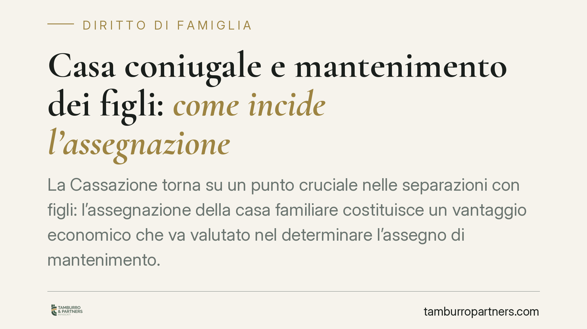
Casa coniugale e mantenimento dei figli: come incide l'assegnazione
La Cassazione torna su un punto cruciale nelle separazioni con figli: l'assegnazione della casa familiare costituisce un vantaggio economico che va valutato nel determinare l'asseg…
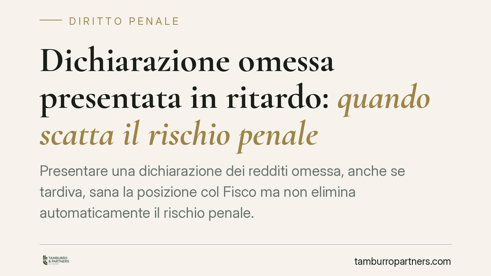
Dichiarazione omessa presentata in ritardo: quando scatta il rischio penale
Presentare una dichiarazione dei redditi omessa, anche se tardiva, sana la posizione col Fisco ma non elimina automaticamente il rischio penale. Il disallineamento tra i termini am…
Corruzione e piccole somme: perché il prezzo non conta
Una mancia di 50 euro a un dipendente pubblico può bastare a integrare il reato di corruzione. La soglia dei 150 euro appartiene al piano deontologico, non a quello penale. Sul ter…
Debiti del comproprietario: rischio l'asta anche se non devo nulla?
Un immobile appartiene a più persone e uno solo dei comproprietari ha debiti: il creditore può aggredire la sua quota fino a spingere l'intero bene all'asta. Chi non ha contratto a…
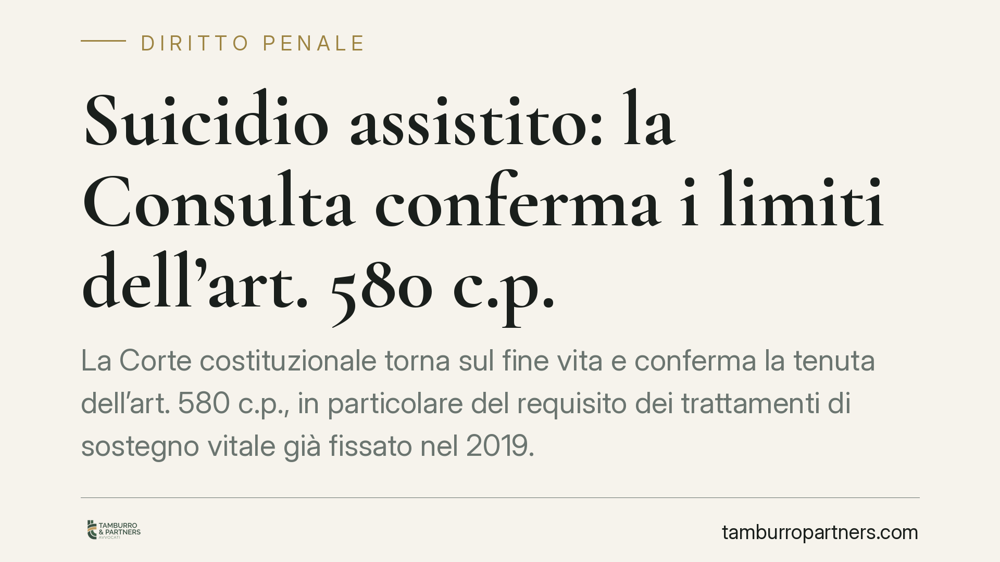
Suicidio assistito: la Consulta conferma i limiti dell'art. 580 c.p.
La Corte costituzionale torna sul fine vita e conferma la tenuta dell'art. 580 c.p., in particolare del requisito dei trattamenti di sostegno vitale già fissato nel 2019. Una decis…
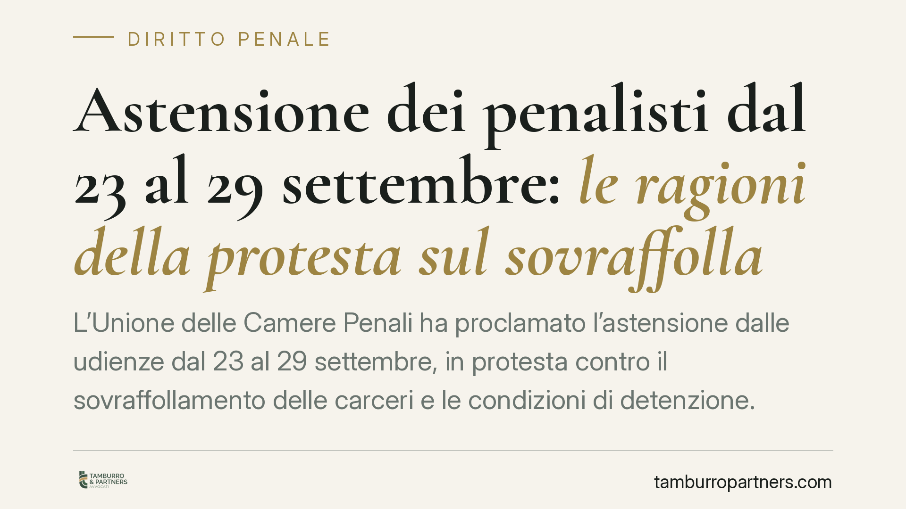
Astensione dei penalisti dal 23 al 29 settembre: le ragioni della protesta sul sovraffollamento carcerario
L'Unione delle Camere Penali ha proclamato l'astensione dalle udienze dal 23 al 29 settembre, in protesta contro il sovraffollamento delle carceri e le condizioni di detenzione. Co…
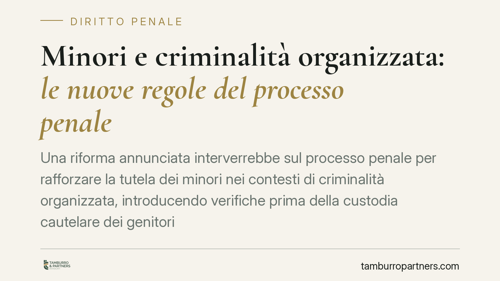
Minori e criminalità organizzata: le nuove regole del processo penale
Una riforma annunciata interverrebbe sul processo penale per rafforzare la tutela dei minori nei contesti di criminalità organizzata, introducendo verifiche prima della custodia ca…
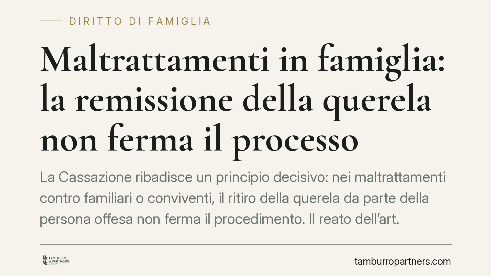
Maltrattamenti in famiglia: la remissione della querela non ferma il processo
La Cassazione ribadisce un principio decisivo: nei maltrattamenti contro familiari o conviventi, il ritiro della querela da parte della persona offesa non ferma il procedimento. Il…
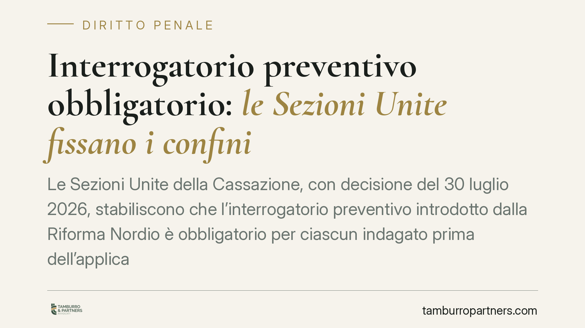
Interrogatorio preventivo obbligatorio: le Sezioni Unite fissano i confini
Le Sezioni Unite della Cassazione, con decisione del 30 luglio 2026, stabiliscono che l'interrogatorio preventivo introdotto dalla Riforma Nordio è obbligatorio per ciascun indagat…
TFR e separazione: il coniuge separato ha diritto a una quota?
La separazione non attribuisce automaticamente al coniuge il diritto a una parte del trattamento di fine rapporto dell'altro. La quota del 40% spetta unicamente al coniuge divorzia…
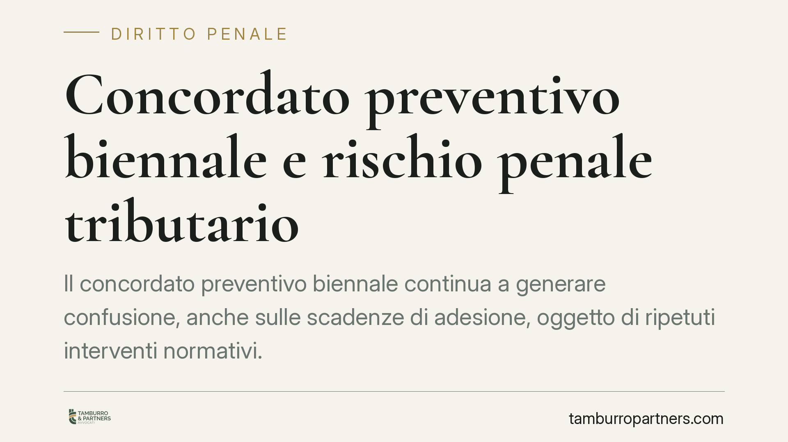
Concordato preventivo biennale e rischio penale tributario
Il concordato preventivo biennale continua a generare confusione, anche sulle scadenze di adesione, oggetto di ripetuti interventi normativi. Ma il punto delicato, spesso trascurat…
Riconoscimento facciale con IA: nuove regole per le indagini penali
Il Governo ha predisposto uno schema di decreto legislativo per regolare l'uso del riconoscimento facciale con intelligenza artificiale da parte delle Forze di polizia, in attuazio…
Alcoltest positivo per colpa di un farmaco: si rischia la condanna?
Un alcoltest positivo dovuto all'assunzione di farmaci può comunque portare a condanna per guida in stato di ebbrezza. La Cassazione ha stabilito che conta il dato oggettivo del su…
Insulti e minacce sui social: quando scatta il reato
Un commento offensivo su Facebook, un messaggio minaccioso in chat, un post che espone una persona al pubblico disprezzo. Non tutte le condotte hanno lo stesso peso: alcune restano…
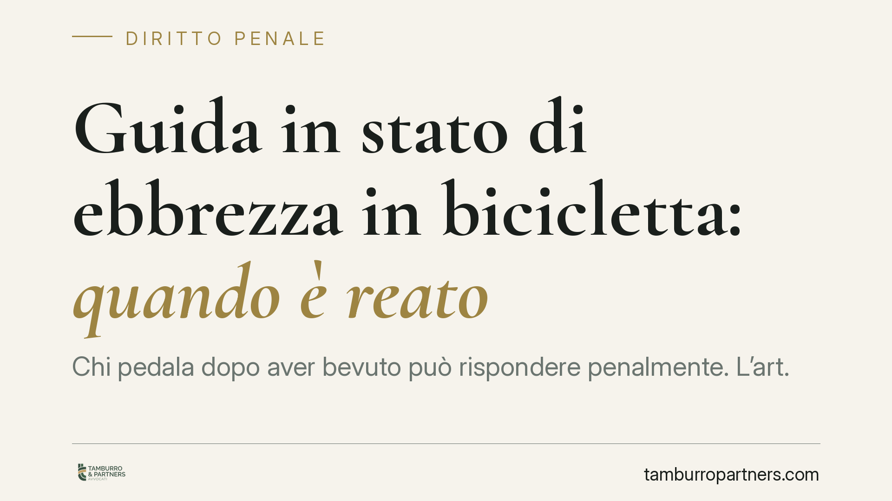
Guida in stato di ebbrezza in bicicletta: quando è reato
Chi pedala dopo aver bevuto può rispondere penalmente. L'art. 186 del Codice della strada si applica a chi conduce un veicolo, e la bicicletta lo è: il possesso della patente non è…
Un genitore può vietare all'altro di vedere il figlio?
Nessun genitore può decidere di propria iniziativa di escludere l'altro dalla vita del figlio. Il diritto del minore a mantenere un rapporto stabile con entrambi i genitori è tutel…
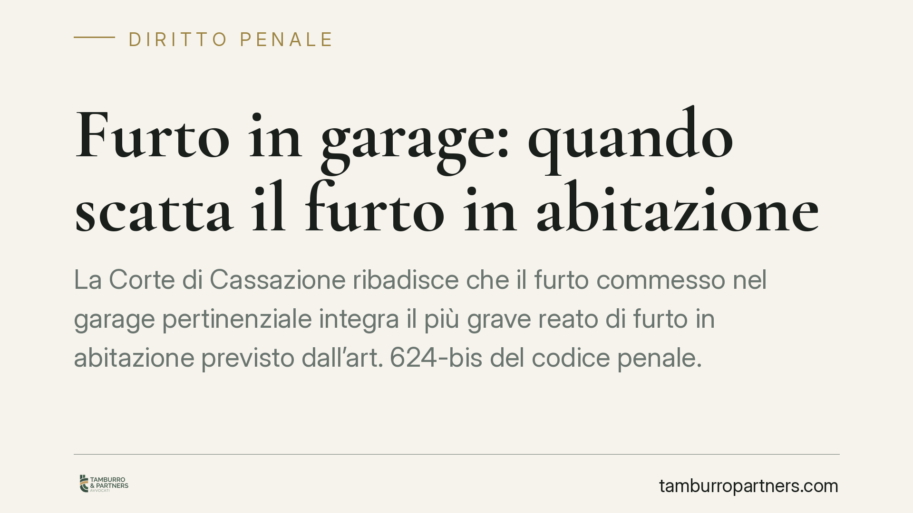
Furto in garage: quando scatta il furto in abitazione
La Corte di Cassazione ribadisce che il furto commesso nel garage pertinenziale integra il più grave reato di furto in abitazione previsto dall'art. 624-bis del codice penale. La d…
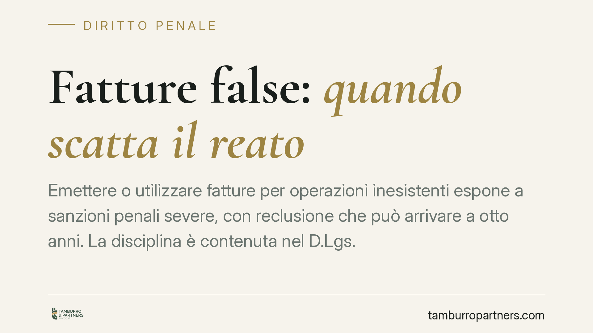
Fatture false: quando scatta il reato
Emettere o utilizzare fatture per operazioni inesistenti espone a sanzioni penali severe, con reclusione che può arrivare a otto anni. La disciplina è contenuta nel D.Lgs. 74/2000,…
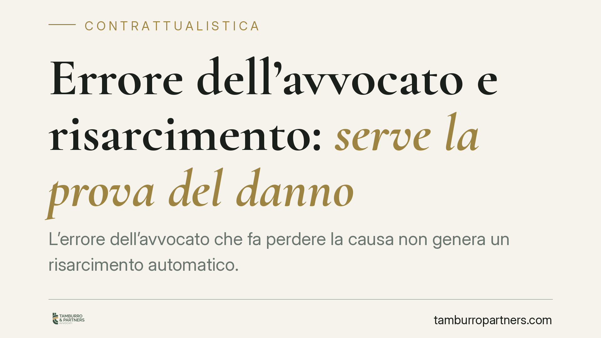
Errore dell'avvocato e risarcimento: serve la prova del danno
L'errore dell'avvocato che fa perdere la causa non genera un risarcimento automatico. La Corte di Cassazione ribadisce un principio consolidato: il cliente deve dimostrare che, sen…
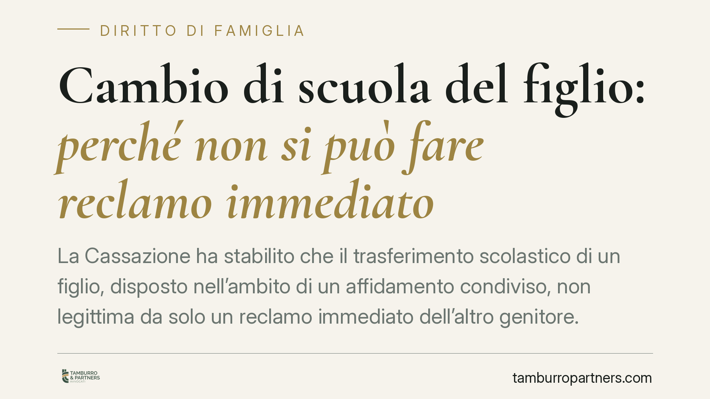
Cambio di scuola del figlio: perché non si può fare reclamo immediato
La Cassazione ha stabilito che il trasferimento scolastico di un figlio, disposto nell'ambito di un affidamento condiviso, non legittima da solo un reclamo immediato dell'altro gen…
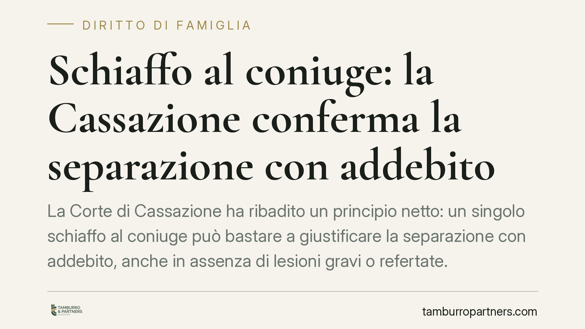
Schiaffo al coniuge: la Cassazione conferma la separazione con addebito
La Corte di Cassazione ha ribadito un principio netto: un singolo schiaffo al coniuge può bastare a giustificare la separazione con addebito, anche in assenza di lesioni gravi o re…
Pignoramento del conto corrente 2026: limiti e minimo vitale
Quanto può prelevare un creditore dallo stipendio o dal conto corrente? La risposta dipende dalla natura della somma, dal momento dell'accredito e dalla soglia del cosiddetto minim…
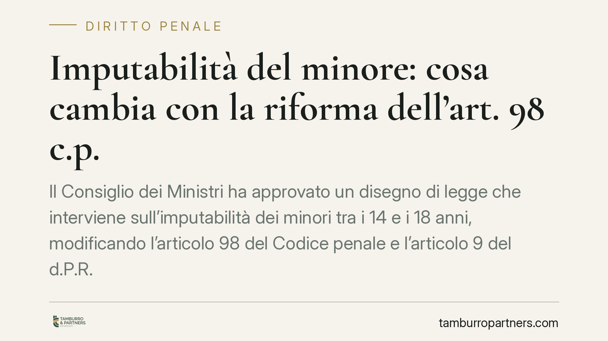
Imputabilità del minore: cosa cambia con la riforma dell'art. 98 c.p.
Il Consiglio dei Ministri ha approvato un disegno di legge che interviene sull'imputabilità dei minori tra i 14 e i 18 anni, modificando l'articolo 98 del Codice penale e l'articol…
Controlli sui conti delle Partite IVA: dal dato bancario al rischio penale
L'Agenzia delle Entrate intensifica i controlli sui conti correnti delle Partite IVA, incrociando accrediti e prelievi con quanto dichiarato. Le discrepanze fanno scattare accertam…
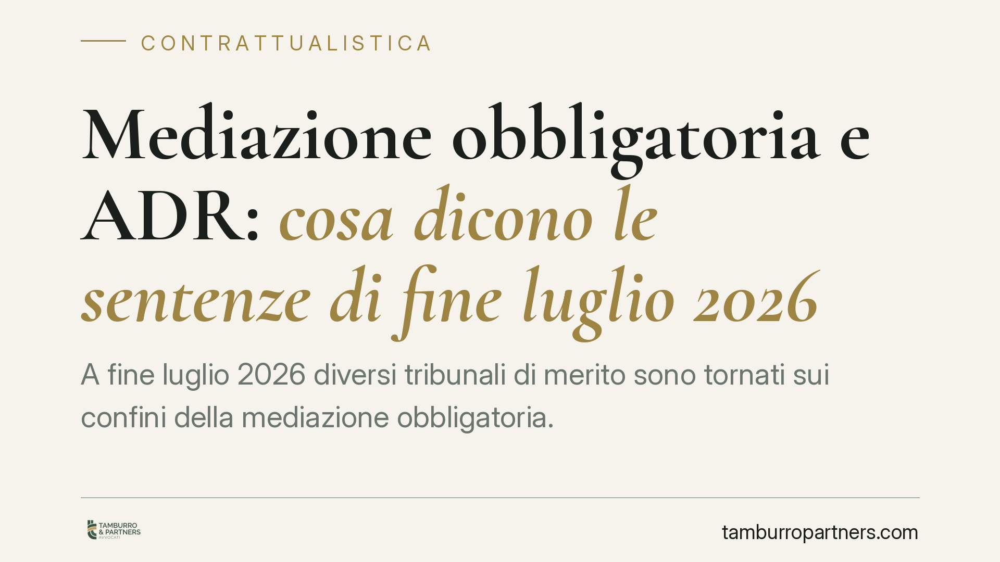
Mediazione obbligatoria e ADR: cosa dicono le sentenze di fine luglio 2026
A fine luglio 2026 diversi tribunali di merito sono tornati sui confini della mediazione obbligatoria. Le pronunce toccano il contenzioso condominiale, l'esclusione per i procedime…
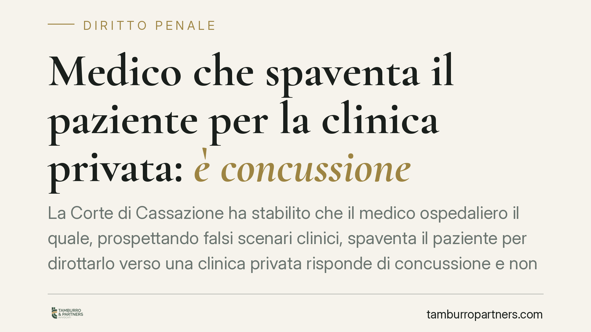
Medico che spaventa il paziente per la clinica privata: è concussione
La Corte di Cassazione ha stabilito che il medico ospedaliero il quale, prospettando falsi scenari clinici, spaventa il paziente per dirottarlo verso una clinica privata risponde d…
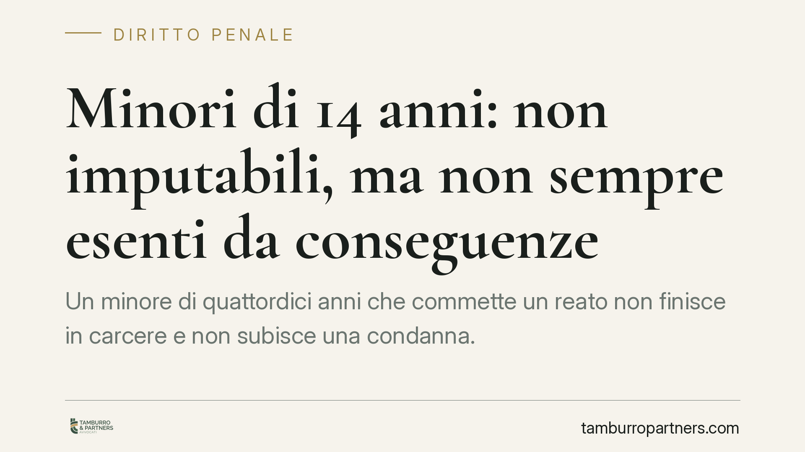
Minori di 14 anni: non imputabili, ma non sempre esenti da conseguenze
Un minore di quattordici anni che commette un reato non finisce in carcere e non subisce una condanna. Ma la formula "non punibile" è più sfumata di quanto sembri: la legge disting…

Pignoramento dello stipendio sul conto corrente: quali limiti nel 2026
Quando lo stipendio viene accreditato sul conto corrente, le regole del pignoramento cambiano rispetto al prelievo diretto in busta paga. La legge distingue tra somme già presenti …

Ferie e ricovero del figlio: cosa dice davvero la legge
Circola la notizia che, dal 2026, i genitori potrebbero interrompere le ferie in caso di ricovero del figlio, con nuovi limiti di età e giorni. Prima di darne conto come diritto ce…

Feste private nella piscina condominiale: i limiti da rispettare
Organizzare una festa nella piscina comune del condominio è possibile, ma non senza regole. L'uso delle parti comuni incontra limiti precisi: il rispetto della pari fruizione da pa…